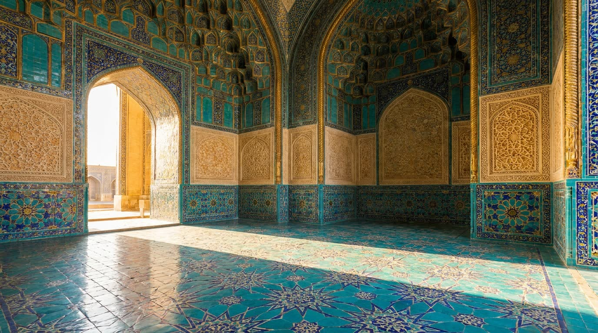

Shaxmat va qonun
Musulmonga shaxmat joizmi? To‘rt huquq maktabi turlicha javob bergan, Ali ash-Shatranjiy esa shofe’iy bo‘lgan.

Qur’onda shaxmat nomi keltirilmagan. Faqihlar 5:90 oyatiga tayanib qiyos bilan fikr yuritishgan, unda sharob, maysir — qimor o‘yini, butlar va fol o‘qlari «shaytonning ishlaridan iflos narsa» deb atalgan. Maysir ostiga tasodifga bog‘liq yoki pulga o‘ynaladigan har qanday o‘yinni kiritishgan: nard, keyin esa qartalar taqiqi shu oyatga tayanadi. Xalifa Ali shaxmatni «fors maysiri» deb atagani haqida rivoyat ham bor, lekin uning haqiqiyligini musulmon mualliflarining o‘zi bahsga olgan.
To‘rt maktab
Abu Hanifa (767-yilda vafot etgan) shaxmatni makruh — qoralangan, lekin taqiqlanmagan deb hisoblagan; aytishlaricha, u taxta ustidagi o‘yinchiga salom berishdan bosh tortmagan. Molik ibn Anas (795-yilda vafot etgan) uni harom deb e’lon qilgan va narddan yomonroq deb topgan, chunki u kuchliroq o‘ziga tortadi. Ahmad ibn Hanbal (855-yilda vafot etgan) ham qarshi bo‘lgan, garchi nardni yomonroq yovuzlik deb hisoblagan. Ash-Shofe’iy (820-yilda vafot etgan) erkinroq qaragan: shaxmat — urush timsoli va unga aql mashqi sifatida o‘ynash mumkin. U Payg‘ambar sahobalarining misoliga tayanib o‘zi o‘ynagan va joizlikning to‘rt shartini qoldirgan: garovga o‘ynamaslik va pul olmaslik, o‘yin tufayli namozni o‘tkazib yubormaslik, so‘kinmaslik va ko‘chada o‘ynamaslik.
Hanbaliy Ibn Taymiya (1328-yilda vafot etgan) oqilona fikr yuritgan: shaxmatdagi maysir — faqat garov. O‘sha oyatdagi «suratlar» taqiqini esa sunniy o‘yinchilar donalarga yoyishgan: o‘xshatib o‘yilgan farzin, fil yoki ot ularga nojoiz ko‘ringan va sunniy Sharq shartli, suratsiz donalar bilan o‘ynagan. Shialar va keyinchalik boburiylar bunday cheklovni bilmagan — hind va fors to‘plamlarining o‘yma otlari va fillari shundan. Bizning jirafa va tuyali o‘yma to‘plamimiz ana shu ikkinchi an’anaga ergashadi.
Temur saroyida
Ibn Arabshoh Temurning eng yaxshi o‘yinchisi Ali ash-Shatranjiy haqida hikoya qilib qo‘shib qo‘yadi: «U shofe’iy edi». Bu tasodifiy tafsilot emas: shofe’iy maktabi — aynan o‘ynashga ruxsat bergani. Temurning o‘zi, o‘sha tarixchining so‘zlariga ko‘ra, katta shaxmat o‘ynagan va o‘zini davlatda Ali taxtada turganidek yuqori qo‘ygan.